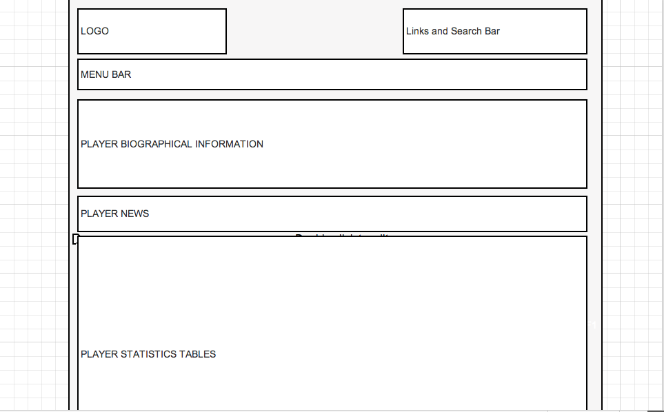
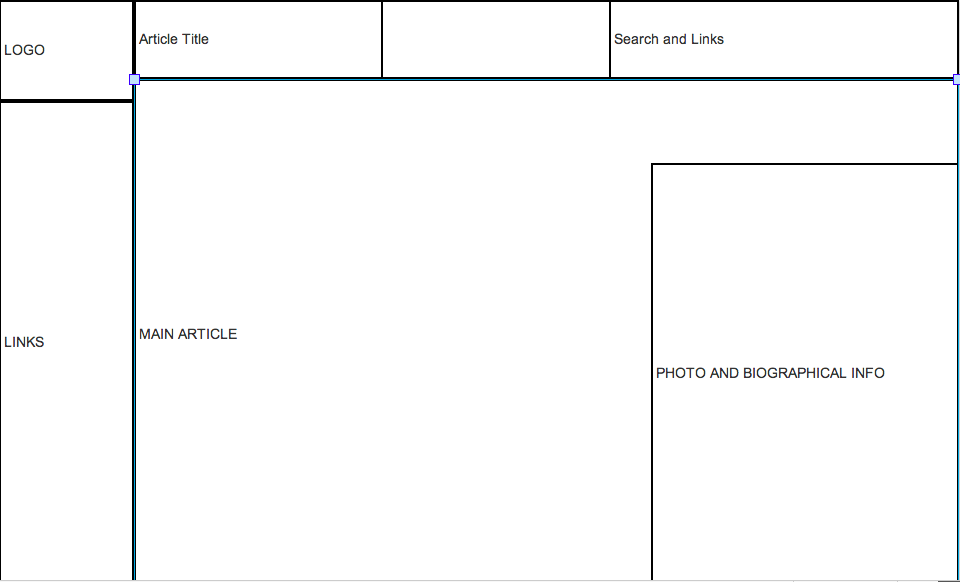
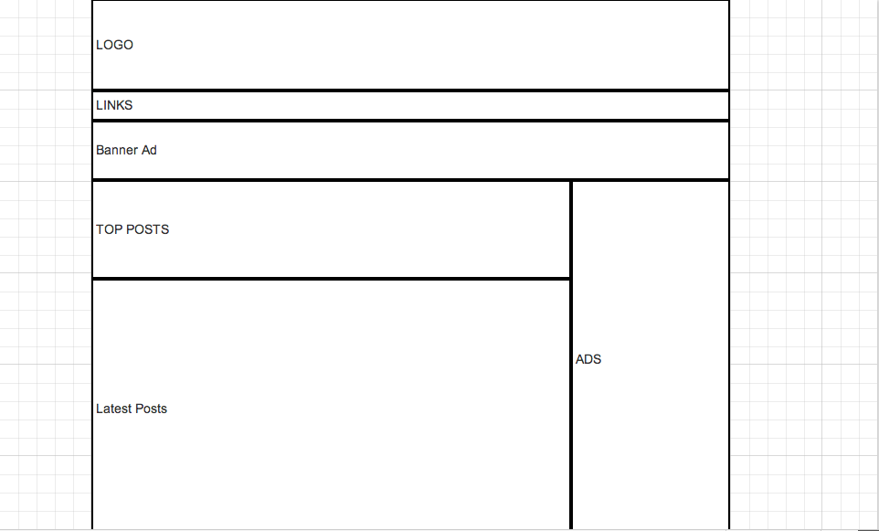

Baseball-Reference.com
What problem is it solving?
It provides an easy to navigate website for find a virtually endless supply of baseball statistics and information
What visual challenges are there?
A huge amount of information must be displayed in a manner that makes it easy to the user to read and find.
Wireframe

Wikipedia.org
What problem is it solving?
It provides an easy to navigate online, editable enclyopedia
What visual challenges are there?
To display a large amount of information in and easy to read, easy to navigate manner
Wireframe

Hardballtalk
What problem is it solving?
Provides daily baseball news updates with commentary
What visual challenges are there?
Displaying up-to-date news and archiving old stores
Wireframe
